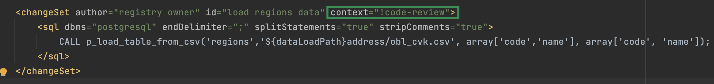
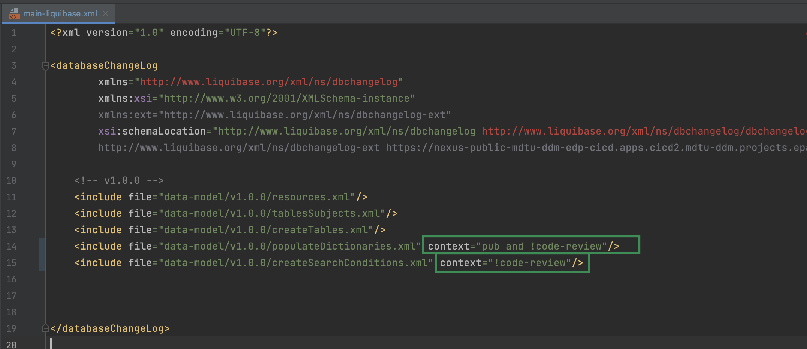

Розширення Liquibase для моделювання даних
- 1. Загальний опис
- 2. Керування таблицями
- 3. Керування критеріями пошуку (Search Conditions)
- 3.1. Тег створення простого критерію пошуку
- 3.2. Тег створення критерію пошуку
- 3.3. Тег видалення критерію пошуку
- 3.4. Тег визначення точок інтеграції з іншими реєстрами, зовнішніми системами та ШБО "Трембіта"
- 4. Керування користувацькими типами даних
- 5. Створення типу зв’язку "Багато до багатьох"
- 6. Збереження декількох сутностей в рамках однієї транзакції
- 7. Генерація ендпоінтів для часткового оновлення сутності в БД
- 8. Керування аналітичними представленнями
- 9. Керування правами доступу до аналітичних даних
- 10. Використання вкладених структур в таблицях БД реєстру за вказаним параметром
- 11. Керування процесом перевірки коду (Code review pipeline)
| 🌐 Цей документ доступний українською та англійською мовами. Використовуйте перемикач у правому верхньому куті, щоб змінити версію. |
Для опису моделі даних реєстру використовуйте кодування UTF-8.
|
1. Загальний опис
Модель даних реєстру описується декларативно за допомогою XML-шаблонів, які обробляє інструмент Liquibase та генерує на SQL-структури.
Через складні вимоги до архітектури Платформи, використання стандартної функціональності Liquibase не покриває всі потреби при роботі зі структурами даних.
Функціональність Liquibase розширено платформним модулем liquibase-ddm-ext, який забезпечує роботу з додатковими кастомними тегами (в термінології Liquibase — change types) XML-шаблону Liquibase, що покривають наступні категорії:
-
створення/видалення простого критерію пошуку (Simple Search Condition);
-
створення аналітичного представлення на репліці (Analytics View);
-
збереження декількох сутностей в рамках однієї транзакції (Composite Entity);
-
генерація ендпоінтів для зміни окремих частин сутності (partial Update);
-
надання/видалення прав ролі ена всі аналітичні представлення (grantAll/revokeAll).
| Для прикладу, повний перелік розширених тегів з їх параметрами зберігається в xsd-схемі за посиланням. |
2. Керування таблицями
2.1. Створення таблиць
Тег createTable використовується для створення нової таблиці в базі даних.
Також для тегу createTable необхідно використовувати атрибут ext:historyFlag зі значенням true. Це розширений атрибут, який використовується для відстеження історії змін.
Приклад XML-схеми
<createTable tableName="test" ext:historyFlag="true">
<column name="role_id" type="BIGINT">
<constraints nullable="false" primaryKey="true" primaryKeyName="pk_pd_subject_role"/>
</column>
<column name="role_name" type="TEXT">
<constraints nullable="false"/>
</column>
</createTable>|
В рамках процесу верифікації регламенту, атрибут Тому при створенні таблиці необхідно вказувати відповідне значення |
| За детальною інформацією щодо створення таблиць зверніться до статті Схема моделювання таблиць та функція підтримки історичності. |
2.1.1. Атрибути створення таблиць та доступні значення
2.1.1.1. Атрибут bulkLoad та доступні значення
Атрибут bulkLoad дозволяє швидко завантажувати дані до таблиць із файлів або масивом.
- Атрибут приймає наступні значення:
-
-
true— якщо значенняbulkLoadвстановлено якtrue, це дозволяє виконувати масове завантаження даних до таблиці з файлів (наприклад,CSV) або масивів (LIST). Це забезпечує оптимальну продуктивність та ефективність при роботі з великими наборами даних. -
false— якщо значенняbulkLoadвстановлено якfalse, масове завантаження даних до таблиці з файлів або масивів буде відключено. У цьому випадку, дані будуть імпортовані до таблиці за допомогою окремих операцій вставки (INSERT), що може бути менш ефективним при роботі з великими об’ємами даних.
Приклад створення таблиці із bulkLoad="true"
<changeSet author="..." id="initial creation"> <ext:createTable name="example_bulk" bulkLoad="true"> <column name="id" type="UUID" defaultValueComputed="uuid_generate_v4()"> <constraints nullable="false" primaryKey="true" primaryKeyName="pk_example_bulk_id"/> </column> <column name="first_name" type="text"/> ... ... </ext:createTable> </changeSet> -
2.1.1.2. Атрибут readMode та доступні значення
Атрибут readMode дозволяє контролювати поведінку читання даних із таблиць бази даних реєстру. Він визначає, як система читає дані з таблиці: синхронно або асинхронно. Залежно від вимог до продуктивності, ви можете встановити відповідне значення для цього атрибута.
- Атрибут приймає наступні значення:
-
-
sync— синхронний режим. У синхронному режимі читання даних, процес читання відбувається послідовно (читання даних виконується на рівніregistry-rest-api). Запит на читання блокується до тих пір, поки дані не будуть повернуті від сервера бази даних. Це означає, що виконання додатка зупиняється на час отримання результатів запита. Синхронний режим може бути корисним у випадках, коли важливо забезпечити послідовність операцій. -
async— асинхронний режим. В асинхронному режимі читання даних, запит на читання відправляється серверу бази даних, але не блокує виконання додатка (читання даних виконується шляхомrest-api > registry-kafka-api > rest-api). Замість цього, додаток продовжує виконувати наступні дії, а результати читання обробляються коли вони стануть доступними. Асинхронний режим дозволяє збільшити продуктивність додатка, оскільки він не чекає завершення операцій читання. Це може бути корисним у випадках, коли необхідно одночасно обробляти велику кількість запитів або коли час відгуку сервера бази даних є непередбачуваним.
Приклад створення таблиці із readMode="sync"
<changeSet> <ext:createTable name="example_read_mode" readMode="sync"> <column name="id" type="UUID" defaultValueComputed="uuid_generate_v4()"> <constraints nullable="false" primaryKey="true" primaryKeyName="pk_example_read_mode_id"/> </column> <column name="first_name" type="text"/> ... ... </ext:createTable> </changeSet> -
2.1.1.3. Атрибут ext:autoGenerate та доступні значення
Атрибут ext:autoGenerate є нестандартним атрибутом розширення Liquibase, який використовується для автоматичної генерації значень для стовпця під час вставки записів у таблицю. Використовується у тегу <column>.
Дозволяє згенерувати унікальний та зрозумілий для користувача номер для сутності, створеної у реєстрі (документа/акту). Номер формується під час збереження сутності та є унікальним у рамках окремого реєстру.
XML-схема
<createTable ...>
...
<column name="column_name" ext:autoGenerate="AA-{dd-MM-yyyy}-{SEQ}">
</column>
...
</createTable>У цьому конкретному випадку, атрибут ext:autoGenerate встановлює шаблон значення для стовпця column_name у форматі AA-{dd-MM-yyyy}-{SEQ}.
Значення, що будуть автоматично генеруватися, матимуть вигляд AA-день-місяць-рік-послідовність.
Тут "АА" — код документа, "день", "місяць" та "рік" — це дата у форматі dd-MM-yyyy, а "послідовність" — це унікальний порядковий номер запису, що додається.
|
Детальний опис функціональності ви можете переглянути за посиланням: |
2.2. Зміна налаштувань поведінки API на рівні структури створення таблиць
Розробники регламенту мають змогу змінювати налаштування поведінки API на рівні структури створення таблиць.
Для цього імплементовано тег ext:alterTableApi, який є нестандартним тегом розширення Liquibase. За допомогою цього тегу можна змінювати деякі атрибути таблиці, які не впливають на структуру даних, але впливають на генерацію коду API.
Наприклад, у відповідному контексті, ext:alterTableApi може дозволити змінювати атрибути, такі як bulkLoad або readMode, що регулюють можливість завантаження даних до таблиці з файлів або масивом та режим читання даних (синхронний або асинхронний), відповідно.
|
Див. детальніше про |
Цей тег допомагає розробникам і моделювальникам регламентів керувати налаштуваннями поведінки API для таблиць після їх створення, без зміни структури даних.
Тег використовує розширення ext:attribute, яке приймає ключ (name) та значення (value) атрибута, для якого необхідно змінити поведінку.
|
XML-схема використання тегу ext:alterTableApi
<changeSet author="..." id="change api behavior">
<ext:alterTableApi table="example_bulk_1">
<ext:attribute name="bulkLoad" value="true"/>
<ext:attribute name="readMode" value="sync"/>
</ext:alterTableApi>
<ext:alterTableApi table="example_bulk_2">
<ext:attribute name="bulkLoad" value="false"/>
</ext:alterTableApi>
</changeSet>
Використовуйте тег
|
Розширена XML-схема. Розгортання таблиць з одними значеннями атрибутів та подальша зміна цих значень із використанням тегу ext:alterTableApi
<databaseChangeLog>
<changeSet author="..." id="initial creation">
<ext:createTable name="example_bulk" bulkLoad="false">
<column name="id" type="UUID" defaultValueComputed="uuid_generate_v4()">
<constraints nullable="false" primaryKey="true" primaryKeyName="pk_example_bulk_id"/>
</column>
<column name="first_name" type="text"/>
...
...
</ext:createTable>
<ext:createTable name="example_read_mode" readMode="sync">
<column name="id" type="UUID" defaultValueComputed="uuid_generate_v4()">
<constraints nullable="false" primaryKey="true" primaryKeyName="pk_example_read_mode_id"/>
</column>
<column name="first_name" type="text"/>
...
...
</ext:createTable>
</changeSet>
<changeSet author="..." id="change api behavior">
<ext:alterTableApi table="example_bulk">
<ext:attribute name="bulkLoad" value="true"/>
<ext:attribute name="readMode" value="sync"/>
</ext:alterTableApi>
<ext:alterTableApi table="example_bulk">
<ext:attribute name="bulkLoad" value="true"/>
</ext:alterTableApi>
</changeSet>
</databaseChangeLog>3. Керування критеріями пошуку (Search Conditions)
Модель даних реєстру будується у регламенті за допомогою XML-тегів, серед яких є <createSearchCondition> для створення критеріїв пошуку — Search Conditions або скорочено SC. Наприклад: <ext:createSearchCondition name="search_condition_test">.
Кожен критерій містить інформацію про таблицю, що буде використовуватися для пошуку, а також параметри пошуку, такі як тип пошуку та колонка, по якій він здійснюється тощо.
Liquibase обробляє XML-модель та створює таблиці-представлення (VIEW) у базі даних, які є зведеними таблицями та містять інформацію, отриману з інших таблиць. До назви такої таблиці в БД додається префікс _v. Наприклад, search_condition_test_v.
При розгортанні моделі даних реєстру, для кожного критерію пошуку створюється REST API-ендпоінт з аналогічною назвою, але в іншій конвенції (dash-case), наприклад search-condition-test.
При виконанні запита до API-ресурсу /search-condition-test, дані зі зведеної таблиці search_condition_test_v повертаються у відповідь.
- Приклад запита до API SC може виглядати так:
-
https://<server-name>-<namespace>/search-condition-test?offset=0&limit=10.
3.1. Тег створення простого критерію пошуку
- Назва change type:
<createSimpleSearchCondition> -
Цей тег надає можливість створити простий критерій пошуку, а саме створити для однієї таблиці відбиток даних (view) та індекс за вказаним полем пошуку.
Приклад XML-схеми
<changeSet author="registry owner" id="searchConditionSimpleTest">
<comment>CREATE simple test search condition</comment>
<ext:createSimpleSearchCondition name="search_condition_simple_test" indexing="true" limit="all">
<ext:table name="search_condition_simple_test" alias="c" searchType="equal" searchColumn="person_full_name"/>
</ext:createSimpleSearchCondition>
</changeSet>| Якщо вказати створення індексу без вказання поля пошуку, то буде згенерована помилка. |
| За детальною інформацією щодо створення простого критерію пошуку зверніться до секції XML-шаблон дизайну простого критерію пошуку (Сценарій 1) відповідного документа. |
3.2. Тег створення критерію пошуку
- Назва change type:
<createSearchCondition> -
Цей тег надає можливість створити критерій пошуку, який створює відбиток даних (
view) за декількома таблицями та зв’язками між ними.
|
Тег може також створювати індекси для кожного поля пошуку. Для цього використовуйте додатковий атрибут |
Приклад XML-схеми
<ext:createSearchCondition name="search_condition" limit="1" indexing="true">
<ext:table name="table_one" alias="to">
<ext:column name="name" alias="to_name" searchType="equal"/>
<ext:column name="type"/>
<ext:function name="count" alias="cnt" columnName="uuid"/>
</ext:table>
<ext:table name="table_two" alias="tt">
<ext:column name="name" alias="tt_name"/>
<ext:column name="code"/>
</ext:table>
<ext:join type="left">
<ext:left alias="to">
<ext:column name="name"/>
</ext:left>
<ext:right alias="tt">
<ext:column name="name"/>
</ext:right>
</ext:join>
<ext:where>
<ext:condition tableAlias="to" columnName="type" operator="eq" value="'char'">
<ext:condition logicOperator="or" tableAlias="to"
columnName="type" operator="eq" value="'text'"/>
</ext:condition>
<ext:condition logicOperator="and" tableAlias="tt" columnName="code" operator="similar" value="'{80}'"/>
</ext:where>
</ext:createSearchCondition>
|
|
За детальною інформацією щодо сценаріїв використання критеріїв пошуку зверніться до наступних секцій відповідного документа: |
3.2.1. Оператор <ext:where> та доступні значення
- Оператор
<ext:where>приймає наступні значення: -
Значення Пояснення Символ (Unicode) Коментар eqequals
=
nenot equal
<>
gtgreater than
>
gegreater than or equals to
>=
ltless than
<
leless than or equals to
⇐
innotInisNullis null
Якщо значення (value) =
true, то перевірка колонки is null; якщо значення (value) =false, то перевірка колонки is not null.similarsimilar
~
-
Value - якщо потрібно передати текстове значення, то потрібно це значення обгорнути в одинарні лапки;
-
<ext:function>— дозволяє використовувати агрегатні функції (min(),max(),avg(),count(),sum()), при цьому поля таблиці, які використовуються в цих функціях, вилучаються з виводу (SELECT). Всі інші поля включаються в групування (GROUP BY).
-
3.2.2. Атрибути критеріїв пошуку та доступні значення
Атрибут searchType та доступні значення
Атрибут searchType в елементі <ext:column> вказує на тип операції, яку необхідно виконати для певної колонки при пошуку в таблиці.
Атрибут приймає наступні значення:
equal-
повертає значення, що мають точну відповідність (дорівнюють) заданим.
Приклад 1. XML-схема<ext:createSearchCondition name="search_condition"> <ext:table name="table_one"> <ext:column name="name" alias="to_name" searchType="equal"/> <ext:column name="type"/> <ext:function name="count" alias="cnt" columnName="uuid"/> </ext:table> </ext:createSearchCondition> startsWith-
повертає значення зі вказаним префіксом, тобто значення, які "починаються із" заданої умови.
Приклад 2. Приклад XML-схеми<ext:createSearchCondition name="pd_consent_subject_name_startswith"> <ext:table name="pd_processing_consent_subject"> <ext:column name="consent_id" fetchType="entity" /> <ext:column name="scan_copy" /> <ext:column name="legal_entity_name" sorting="asc" searchType="startsWith" /> <ext:column name="consent_subject_id"/> </ext:table> </ext:createSearchCondition> contains-
повертає значення, які мають збіги із вказаним значенням умови у будь-якому місці рядка (на початку, в середині, в кінці тощо).
Приклад 3. XML-схема<ext:createSearchCondition name="SearchCondition" limit="1"> <ext:table name="table_two" alias="tt"> <ext:column name="name" alias="tt_name"/> <ext:column name="code" searchType="contains"/> <ext:function name="sum" alias="sm" columnName="code"/> </ext:table> </ext:createSearchCondition> in-
повертає значення, що мають точну відповідність (дорівнюють) заданим значенням у масиві. Подібний до
equal, але множинний.Приклад 4. XML-схема<ext:createSearchCondition name="findInAge"> <ext:table name="user"> <ext:column name="firstName" returning="true"/> <ext:column name="lastName" returning="true"/> <ext:column name="age" searchType="in"/> </ext:table> </ext:createSearchCondition>Приклад 5. HTTP-запит із використанням оператора inhttps://..../findInAge?age=18,21,42 notIn-
повертає значення, що не мають відповідність (не дорівнюють) заданим значенням у масиві. Він є протилежним до значення
inатрибутаsearchType.Приклад 6. XML-схема<ext:createSearchCondition name="findNotInAge"> <ext:table name="user"> <ext:column name="firstName" returning="true"/> <ext:column name="lastName" returning="true"/> <ext:column name="age" searchType="notIn"/> </ext:table> </ext:createSearchCondition>Приклад 7. HTTP-запит із використанням оператора notInhttps://..../findNotInAge?age=18,21,42 between-
повертає значення, що мають приналежність до заданого діапазону значень (в межах "з"-"до").
Приклад 8. XML-схема<ext:createSearchCondition name="findBetweenAge"> <ext:table name="user"> <ext:column name="firstName" returning="true"/> <ext:column name="lastName" returning="true"/> <ext:column name="age" searchType="between"/> </ext:table> </ext:createSearchCondition>Приклад 9. HTTP-запит із використанням оператора betweenhttps://..../findBetweenAge?ageFrom=18&ageTo=42
Атрибут limit та доступні значення
Атрибут limit визначає максимальну кількість результатів (рядків), які повертаються до API за пошуковою умовою.
- Атрибут може приймати такі значення:
-
-
limit="all"— повертає усі результати за умовою пошуку; -
limit="10"(тобто конкретні числа як String) — повертає обмежену кількість результатів за умовою пошуку.
Якщо не вказати атрибут, повертатимуться усі записи за умовою. -
Наприклад, якщо атрибут limit у тегу <ext:createSimpleSearchCondition> має значення 10, це означає, що максимальна кількість результатів, які повертатимуться до API за пошуковою умовою, становитиме 10.
<changeSet author="registry owner" id="searchConditionSimpleTest">
<comment>CREATE simple test search condition</comment>
<ext:createSimpleSearchCondition name="search_condition_simple_test" indexing="true" limit="10">
<ext:table name="search_condition_simple_test" alias="c" searchType="equal" searchColumn="person_full_name"/>
</ext:createSimpleSearchCondition>
</changeSet>Іншими словами, якщо у таблиці search_condition_simple_test більше 10 записів, які відповідають критеріям пошуку, що визначені у тегу <ext:createSimpleSearchCondition>, а атрибут limit має значення 10, то пошукова умова поверне лише перші 10 рядків.
Атрибут indexing та доступні значення
Атрибут indexing дозволяє автоматично створювати індекси на колонки, по яких відбувається пошук.
- Атрибут може приймати такі значення:
-
-
indexing="true"— створює індекс; -
indexing="false"— не створює індекс.Можна не вказувати цей атрибут взагалі, якщо не потрібно створювати індекси. indexing="false"вказується, коли необхідно явно зазначити це на схемі моделі даних.
-
<changeSet author="registry owner" id="searchConditionSimpleTest">
<comment>CREATE simple test search condition</comment>
<ext:createSimpleSearchCondition name="search_condition_simple_test" indexing="true" limit="10">
<ext:table name="search_condition_simple_test" alias="c" searchType="equal" searchColumn="person_full_name"/>
</ext:createSimpleSearchCondition>
</changeSet>Атрибут indexing="true" у тегу <ext:createSimpleSearchCondition> вказує на те, що створення індексу для вказаної колонки (person_full_name) має бути увімкнено.
У такому випадку, якщо атрибут indexing встановлений як true, то буде створено індекс для колонки person_full_name. Індекс дозволяє прискорити пошук даних в таблиці, зменшити час виконання запитів і зробити їх більш ефективними.
Атрибут returning та доступні значення
Атрибут returning вказує, чи повинно значення повертатися у відповіді до API.
- Атрибут може приймати такі значення:
-
-
returning="true"— повертає значення; -
returning="false"— не повертає значення.
-
<changeSet author="registry owner" id="searchCondition test">
<comment>CREATE test search condition</comment>
<ext:createSearchCondition name="searchConditionTest" indexing="true">
<ext:table name="consent_data_person" alias="c">
<ext:column name="person_full_name" searchType="equal" returning="true" type="text"/>
<ext:column name="person_pass_number" returning="true" type="varchar"/>
<ext:column name="consent_date" returning="true"/>
</ext:table>
<ext:table name="consent_subject" alias="cs">
<ext:column name="legal_entity_name" alias="srch_legal_entity_name" returning="true"/>
<ext:column name="edrpou" alias="srch_edrpou" returning="true"/>
</ext:table>
<ext:join type="inner">
<ext:left alias="c">
<ext:column name="consent_id"/>
</ext:left>
<ext:right alias="cs">
<ext:column name="consent_id"/>
</ext:right>
</ext:join>
</ext:createSearchCondition>
</changeSet>Атрибут returning в елементі <ext:column> вказує на те, що значення відповідної колонки повинні повертатися у вихідному наборі даних запита. Якщо атрибут returning встановлено як true, значення відповідної колонки будуть включені до результату запита.
У цьому випадку, якщо атрибут returning встановлено як true, то для колонок person_full_name, person_pass_number та consent_date з таблиці consent_data_person, а також для колонок legal_entity_name та edrpou з таблиці consent_subject значення будуть включені до результату запита.
За замовчування returning="true". Якщо ви хочете виключити із результату значення певних колонок, вкажіть returning="false".
|
Атрибут pagination та доступні значення
Доступ для запитів від зовнішніх систем надається згідно з наявною реалізацією, додаванням тегу <exposeSearchCondition> (див. детальніше у розділі Тег визначення точок інтеграції з іншими реєстрами, зовнішніми системами та ШБО "Трембіта").
|
Атрибут pagination приймає наступні значення:
- offset
-
повертає певну кількість записів, враховуючи пагінацію на основі зміщення. При запиті до API кількість записів регулюється параметром
limit.За замовчуванням пагінація увімкнена і налаштована як pagination="offset".- Як працює
offsetтаlimit? -
Наприклад, таблиця містить 100 записів.
Ви хочете отримати відразу не усі 100, а перші 10 (з 1 по 10) — тоді передаєте до API
offset=0(або не вказуєте взагалі),limit=10.Тепер, якщо потрібно отримати наступні 10 записів (з 11 по 20), то встановлюємо
offset=10,limit=10. Якщо ж потрібно отримати записи з 11 по 30, то встановлюємоoffset=10,limit=20тощо.Таким чином, відбувається зміщення на 1 десяток від значення, яке ви передаєте у запиті.
Приклад 13. Створення пошукового запита з атрибутом pagination="offset" у моделі даних реєстру<changeSet author="registry owner" id="create SC get_requests_by_search_param_offset"> <ext:createSearchCondition name="get_requests_by_search_param_offset" pagination="offset"> <ext:table name="request_by_search_param"> <ext:column name="request_by_search_param_id"/> <ext:column name="name"/> <ext:column name="search_param"/> </ext:table> </ext:createSearchCondition> </changeSet>Цей Search Condition створює умову пошуку із назвою
get_requests_by_search_param_offsetі дозволяє виконувати пошук запитів із таблиціrequest_by_search_paramза допомогою параметраsearch_paramз пагінацією на основі зміщення (атрибутpagination="offset").Приклад 14. HTTP-запит до ресурсу із query-параметрами offset та limithttps://registry-rest-api-mdtu-ddm-edp-cicd-platform-demo.apps.cicd2.mdtu-ddm.projects.epam.com/get-requests-by-search-param-offset?offset=0&limit=10Приклад 15. Відповідь від API[ { "searchParam": "string", "requestBySearchParamId": "3fa85f64-5717-4562-b3fc-2c963f66afa6", "name": "string" } ]Приклад OpenAPI специфікації
- Як працює
- page
-
повертає інформацію про поточну сторінку, кількість елементів на сторінці, загальну кількість елементів та загальну кількість сторінок.
За замовчуванням пагінація увімкнена і налаштована як pagination="offset".Приклад 16. Створення пошукового запита з атрибутом pagination="page"<changeSet author="registry owner" id="create SC get_requests_by_search_param_page"> <ext:createSearchCondition name="get_requests_by_search_param_page" pagination="page"> <ext:table name="request_by_search_param"> <ext:column name="request_by_search_param_id"/> <ext:column name="name"/> <ext:column name="search_param"/> </ext:table> </ext:createSearchCondition> </changeSet>Цей Search Condition створює умову пошуку з назвою
get_requests_by_search_param_page, яка дозволяє виконувати пошук запитів з таблиціrequest_by_search_paramза допомогою параметраsearch_paramз пагінацією на основі сторінок (атрибутpagination="page").Приклад 17. HTTP-запит до ресурсу із query-параметрами pageSize та pageNohttps://registry-rest-api-mdtu-ddm-edp-cicd-platform-demo.apps.cicd2.mdtu-ddm.projects.epam.com/get-requests-by-search-param-page?pageSize=10&pageNo=0- Query-параметри запита:
-
-
pageSize— бажана кількість елементів на сторінці. За замовчуванням10. -
pageNo— бажаний номер сторінки. За замовчуванням0.
-
Приклад 18. Відповідь від API{ "content": [ { "searchParam": "string", "name": "string", "requestBySearchParamId": "3fa85f64-5717-4562-b3fc-2c963f66afa6" } ], "totalElements": 0, "totalPages": 0, "pageNo": 0, "pageSize": 10 }- API повертає наступні атрибути у відповіді:
-
-
content— масив елементів, що підпадають під вказані критерії пошуку. -
totalElements— загальна кількість елементів за запитом. -
totalPages— загальна кількість сторінок за запитом. -
pageSize— кількість елементів на сторінці. -
pageNo— номер сторінки що повертається.
-
Приклад OpenAPI специфікації
- none
-
атрибут дозволяє вимкнути пагінацію при пошукових запитах до API.
За замовчуванням пагінація увімкнена і налаштована як pagination="offset".Приклад 19. Створення пошукового запита з атрибутом pagination="none"<changeSet author="registry owner" id="create SC get_requests_by_search_param_page"> <ext:createSearchCondition name="get_requests_by_search_param_page" pagination="page"> <ext:table name="request_by_search_param"> <ext:column name="request_by_search_param_id"/> <ext:column name="name"/> <ext:column name="search_param"/> </ext:table> </ext:createSearchCondition> </changeSet>Цей Search Condition створює умову пошуку з назвою
get_requests_by_search_param_page, яка дозволяє виконувати пошук запитів з таблиціrequest_by_search_paramза допомогою параметраsearch_paramбез пагінації (атрибутpagination="none")
3.2.3. Використання операції JOIN з умовами AND та OR
Операція <ext:join> дозволяє поєднувати таблиці за певними умовами. Використовується при створенні критеріїв пошуку всередині тегу <ext:createSearchCondition> для отримання необхідних даних у зведених таблицях.
- Є 3 основні типи поєднання таблиць за допомогою JOIN:
-
-
INNER JOIN — Перетин даних двох таблиць. Наприклад,
<ext:join type="inner">. -
LEFT JOIN — вивід даних з першої таблиці (зліва) та приєднання даних другої таблиці (справа), де це можливо. Наприклад,
<ext:join type="left">. -
RIGHT JOIN — протилежний до LEFT JOIN. Наприклад,
<ext:join type="right">.
-
Операцію <ext:join> можна використовувати із додатковими умовами and та or, які визначаються в рамках тегу <ext:condition> як значення атрибута logicOperator.
<ext:createSearchCondition name="get_regions_or_citi_regions">
<ext:table name="katottg" alias="k">
<ext:column name="katottg_id" />
<ext:column name="name" alias="name_region" searchType="startsWith" />
<ext:column name="category" />
</ext:table>
<ext:table name="katottg_category" alias="cat">
<ext:column name="name" alias="name_category" />
<ext:column name="code" />
</ext:table>
<ext:join type="inner">
<ext:left alias="k">
<ext:column name="category" />
</ext:left>
<ext:right alias="cat">
<ext:column name="code" />
</ext:right>
</ext:join>
</ext:createSearchCondition><ext:createSearchCondition name="get_regions_or_citi_regions">
<ext:table name="katottg" alias="k">
<ext:column name="katottg_id" />
<ext:column name="name" alias="name_region" searchType="startsWith" />
<ext:column name="category" />
</ext:table>
<ext:table name="katottg_category" alias="cat">
<ext:column name="name" alias="name_category" />
<ext:column name="code" />
</ext:table>
<ext:join type="inner">
<ext:left alias="k">
<ext:column name="category" />
</ext:left>
<ext:right alias="cat">
<ext:column name="code" />
</ext:right>
<ext:condition logicOperator="and" columnName="k.category" operator="eq" value="'K'"/>
</ext:join>
</ext:createSearchCondition><ext:createSearchCondition name="get_regions_or_citi_regions">
<ext:table name="katottg" alias="k">
<ext:column name="katottg_id" />
<ext:column name="name" alias="name_region" searchType="startsWith" />
<ext:column name="category" />
</ext:table>
<ext:table name="katottg_category" alias="cat">
<ext:column name="name" alias="name_category" />
<ext:column name="code" />
</ext:table>
<ext:join type="inner">
<ext:left alias="k">
<ext:column name="category" />
</ext:left>
<ext:right alias="cat">
<ext:column name="code" />
</ext:right>
<ext:condition logicOperator="or" columnName="k.category" operator="eq" value="cat.code">
<ext:condition logicOperator="and" columnName="k.category" operator="ne" value="'K'"/>
<ext:condition logicOperator="and" columnName="k.level" operator="eq" value="'1'"/>
</ext:condition>
</ext:join>
</ext:createSearchCondition>|
Більше про використання JOIN та додаткові умови дивіться на сторінці Сценарії поєднання таблиць за допомогою JOIN із додатковими умовами AND та OR. |
3.3. Тег видалення критерію пошуку
- Назва change type:
<dropSearchCondition> -
Цей тег надає можливість видалити критерій пошуку.
Приклад XML-схеми
<ext:dropSearchCondition name="search_condition"/>|
За детальною інформацією щодо сценарію використання видалення критерію пошуку у секцій XML-шаблон видалення критерію пошуку. відповідного документа. |
3.4. Тег визначення точок інтеграції з іншими реєстрами, зовнішніми системами та ШБО "Трембіта"
- Назва change type:
<exposeSearchCondition> -
Цей тег надає можливість визначити точки інтеграції з іншими реєстрами, зовнішніми системами та ШБО "Trembita".
Приклад XML-схеми
<ext:exposeSearchCondition name="viewForDrop" platform="true" externalSystem="true" trembita="false"/>- Тег приймає 4 атрибути:
-
-
name— назва критерію пошуку (search condition); -
platform— для надання доступу до представлень та REST API реєстру для іншого реєстру на Платформі; -
externalSystem— для надання доступу до представлень та REST API реєстру для зовнішньої системи; -
trembita— Надання доступу до представлень реєстру для сервісів-учасників СЕВ ДЕІР через інтерфейс ШБО "Трембіта" за протоколом SOAP.
-
4. Керування користувацькими типами даних
4.1. Тег створення перелічувального типу даних (ENUM)
- Назва change type:
<createType> <ext:asEnum> -
Цей тег надає можливість створити перелічувальний тип даних (ENUM).
Приклад XML-схеми
<ext:createType name="type_gender">
<ext:asEnum>
<ext:label translation="Жіноча">FEMALE</ext:label>
<ext:label translation="Чоловіча">MALE</ext:label>
</ext:asEnum>
</ext:createType>4.2. Тег створення композитного типу даних (Composite)
- Назва change type:
<createType> <ext:composite> -
Цей тег надає можливість створити композитний тип даних (Composite).
Приклад XML-схеми
<ext:createType name="field_access_type">
<ext:composite>
<ext:column name="masked_value" type="TEXT" collation="uk_UA.utf8"/>
<ext:column name="opened" type="BOOLEAN"/>
<ext:column name="private" type="BOOLEAN"/>
<ext:column name="confidential" type="BOOLEAN"/>
<ext:column name="secret" type="BOOLEAN"/>
<ext:column name="service" type="BOOLEAN"/>
</ext:composite>
</ext:createType>
За детальною інформацією щодо створення типу даних ENUM та Composite зверніться до секції Схема створення типів даних ENUM та Composite відповідного документа.
|
4.3. Тег видалення типу даних
- Назва change type:
<dropType> -
Цей тег надає можливість видалити тип даних.
Приклад XML-схеми
<ext:dropType name=" type_gender"/>4.4. Тег створення користувацького типу даних з перевіркою на певні умови
- Назва change type:
<createDomain> -
Цей тег надає можливість створити користувацький тип даних з перевіркою на певні умови.
Приклад XML-схеми
<ext:createDomain name="dn_passport_num"
dataType="CHAR(8)">
<ext:constraint implementation="NOT NULL"/>
<ext:constraint name="passport_number_chk"
implementation="CHECK (VALUE ~ '^[АВЕІКМНОРСТХ]{2}[0-9]{6}$)"/>
</ext:createDomain>
За детальною інформацією щодо створення типу даних Domain зверніться до секції Схема створення типу даних Domain відповідного документа.
|
4.5. Тег видалення користувацького типу даних
- Назва change type:
<dropDomain> -
Цей тег надає можливість видалити користувацький тип даних.
Приклад XML-схеми
<ext:dropDomain name=" dn_passport_num"/>5. Створення типу зв’язку "Багато до багатьох"
- Назва change type:
<createMany2Many> -
Цей тег надає можливість створити особливий тип зв’язку "Багато до багатьох", що виконує наступні функції:
-
створює відбиток даних (view), розгортаючи масив у рядки;
-
створює індекс.
-
Приклад XML-схеми
<ext:createMany2Many
mainTableName="table1"
mainTableKeyField="column_id"
referenceTableName="table2"
referenceKeysArray="columns"/>де “columns” має тип "UUID[ ]" -"Масив ідентифікаторів"
| За детальною інформацією щодо створення зв’язків між таблицями зверніться до розділу Схема моделювання зв’язків між сутностями в БД відповідного документа. |
6. Збереження декількох сутностей в рамках однієї транзакції
- Назва change type:
<createCompositeEntity> -
Цей тег надає можливість зберегти декілька сутностей в рамках однієї транзакції.
Приклад XML-схеми
<ext:createCompositeEntity name="nested_tables">
<ext:nestedEntity table="table_one">
<ext:link column="two_column_id" entity="table_two"/>
</ext:nestedEntity>
<ext:nestedEntity name="tableTwo" table="table_two">
<ext:link column="three_column_id" entity="table_three"/>
</ext:nestedEntity>
<ext:nestedEntity name="tableThree" table="table_three"/>
</ext:createCompositeEntity>7. Генерація ендпоінтів для часткового оновлення сутності в БД
- Назва change type:
<partialUpdate> -
Цей тег надає можливість генерувати ендпоінти для зміни окремих частин сутності.
Приклад XML-схеми
<partialUpdate table="table_name">
<column>column_name1</column>
<column>column_name2</column>
<column>column_name3</column>
</partialUpdate>8. Керування аналітичними представленнями
8.1. Тег створення аналітичного представлення
- Назва change type:
<createAnalyticsView> -
Цей тег надає можливість створити аналітичні представлення на репліці.
Приклад XML-схеми
<ext:createAnalyticsView name="report_table_name">
<ext:table name="table_name">
<ext:column name="column1"/>
<ext:column name=" column2"/>
</ext:table>
</ext:createAnalyticsView>8.2. Тег видалення аналітичного представлення
- Назва change type:
<dropAnalyticsView> -
Цей тег надає можливість видалити аналітичні представлення на репліці.
Приклад XML-схеми
<ext:dropAnalyticsView name="report_table_name"/>8.3. Тег створення індексу
- Назва change type:
<createAnalyticsIndex> -
Цей тег надає можливість створити індекс лише на репліці.
Приклад XML-схеми
<ext:createAnalyticsIndex tableName="table" indexName="idx_table__column">
<column name="column"/>
</ext:createAnalyticsIndex>9. Керування правами доступу до аналітичних даних
| За детальною інформацією щодо прав доступу до аналітичних даних зверніться до розділу Права доступу до аналітичних даних відповідного документа. |
9.1. Тег надання доступу до всіх аналітичних представлень
- Назва change type:
<grantAll> -
Цей тег надає можливість доступу до всіх аналітичних представлень для певної ролі.
Приклад XML-схеми
<ext:grantAll>
<ext:role name="analytics_officer"/>
</ext:grantAll>9.2. Тег видалення доступу до всіх аналітичних представлень
- Назва change type:
<revokeAll> -
Цей тег надає можливість видаляти права доступу до всіх аналітичних представлень для певної ролі.
Приклад XML-схеми
<ext:revokeAll>
<ext:role name="analytics_officer"/>
</ext:revokeAll>9.3. Тег надання доступу до окремого аналітичного представлення
- Назва change type:
<grant> -
Цей тег надає можливість доступу до окремого аналітичного представлення для певної ролі.
Приклад XML-схеми
<ext:grant>
<ext:role name="analytics_officer">
<ext:view name="report_pd_processing_consent"/>
</ext:role>
<ext:role name="analytics_officer">
<ext:view name="report_pd_processing_consent"/>
</ext:role>
</ext:grant>9.4. Тег видалення доступу до окремого аналітичного представлення
- Назва change type:
<revoke> -
Цей тег надає можливість видаляти права доступу до окремого аналітичного представлення для певної ролі.
Приклад XML-схеми
<ext:revoke>
<ext:role name="analytics_officer">
<ext:view name="report_pd_processing_consent"/>
</ext:role>
</ext:revoke>10. Використання вкладених структур в таблицях БД реєстру за вказаним параметром
10.1. Тег використання вкладених структур
- Назва change type:
<tableReadParameters> -
Цей тег надає можливість моделювати вкладені структури в таблицях БД реєстру за вказаним параметром.
|
Для використання у критеріях пошуку (search conditions) додано атрибут Застосовується для двох типів зв’язку:
Атрибут
|
Приклад XML-схеми з тегом <tableReadParameters>
<ext:tableReadParameters table="person_type_vpo">
<ext:column name="consents" fetchType="entity"/>
</ext:tableReadParameters>Приклад XML-схеми з атрибутом fetchType
<ext:createSearchCondition name="vpo_person_equals_id_with_fetch_type_person">
<ext:table name="vpo_person_many_types">
<ext:column name="consent_id" fetchType="entity" />
<ext:column name="scan_copy" />
<ext:column name="legal_entity_name" sorting="asc" searchType="startsWith" />
<ext:column name="consent_subject_id"/>
</ext:table>
</ext:createSearchCondition>-
Таблиця 1має зв’язок many2many зТаблицею 2. -
Таблиця 1має колонку з масивом id (зовнішні ключі доТаблиці 2). -
Відповідь при запиті до ресурсу з
Таблиці 1повинна мати у полі з посиланнями доТаблиці 2інформацію, відповідну до записів зТаблиці 2.
{
"vpoId":"57152fa5-742c-4b1e-bd53-acc36524cc2d",
"vpoLastName":"Петренко",
"vpoFirstName":"Петро",
"vpoSecondName":"Іванович",
"personTypes":[
"2d89ffea-118c-4be9-9fa0-c3007991c811",
"0d756563-d6a4-46fe-a0c8-ddf4a935ec35"
]
}[
{
"constantCode":"1100",
"name":"Багатодітна сім'я'",
"personTypeVpoId":"2d89ffea-118c-4be9-9fa0-c3007991c811"
},
{
"constantCode":"1200",
"name":"Діти",
"personTypeVpoId":"0d756563-d6a4-46fe-a0c8-ddf4a935ec35"
}
]vpo_person_type_contains_name<changeSet author="registry owner" id="create SC vpo_person_equals_id_person_with_fetch_many_types">
<ext:createSearchCondition name="vpo_person_equals_id_person_with_fetch_many_types">
<ext:table name="vpo_person_many_types">
<ext:column name="vpo_person_many_id" searchType="equal"/>
<ext:column name="vpo_first_name" />
<ext:column name="vpo_last_name"/>
<ext:column name="vpo_second_name"/>
<ext:column name="person_types" fetchType="entity"/>
</ext:table>
</ext:createSearchCondition>
</changeSet><changeSet id="table t_person_table_many2many_fetch_id" author="registry owner">
<createTable tableName="t_person_table_many2many_fetch_id" ext:isObject="true" ext:historyFlag="true" remarks="VPO">
<column name="id" type="UUID" defaultValueComputed="uuid_generate_v4()" remarks="Ідентифікатор vpo">
<constraints nullable="false" primaryKey="true" primaryKeyName="pk_t_person_table_many2many_fetch_id"/>
</column>
<column name="name" type="TEXT" remarks="ім'я">
<constraints nullable="false"/>
</column>
<column name="person_types" type="UUID[]" remarks="Масив id"/>
</createTable>
<ext:createMany2Many mainTableName="t_person_table_many2many_fetch_id"
mainTableKeyField="id"
referenceTableName="person_type_vpo"
referenceKeysArray="person_types"/>
<ext:tableReadParameters table="t_person_table_many2many_fetch_id">
<ext:column name="person_types" fetchType="entity"/>
</ext:tableReadParameters>
</changeSet>{
"vpoId":"57152fa5-742c-4b1e-bd53-acc36524cc2d",
"vpoLastName":"Петренко",
"vpoFirstName":"Петро",
"vpoSecondName":"Іванович",
"personTypes":[
"2d89ffea-118c-4be9-9fa0-c3007991c811",
"0d756563-d6a4-46fe-a0c8-ddf4a935ec35"
]
}{
"vpoId":"57152fa5-742c-4b1e-bd53-acc36524cc2d",
"vpoLastName":"Петренко",
"vpoFirstName":"Петро",
"vpoSecondName":"Іванович",
"personTypes":[
{
"id":"2d89ffea-118c-4be9-9fa0-c3007991c811",
"constantCode":"1100",
"name":"Багатодітна сім'я'"
},
{
"id":"0d756563-d6a4-46fe-a0c8-ddf4a935ec35",
"constantCode":"1200",
"name":"Діти"
}
]
}11. Керування процесом перевірки коду (Code review pipeline)
У моделі даних можна налаштовувати атрибути, які дозволяють виключати окремі набори змін (changeSets) або цілі файли із процесу розгортання у пайплайні Code Review. Це дозволяє прискорити процес проходження code-review при роботі з моделлю даних реєстру в рамках версій-кандидатів у Кабінеті адміністратора регламентів (детальніше про особливості роботи з моделлю даних в рамках версій-кандидатів — див. на сторінці Таблиці моделі даних реєстру та їх структури).
|
Code Review pipeline — це процес перевірки коду, який забезпечує, що розроблюваний код відповідає вимогам якості та стандартам кодування. Основним Code Review пайплайном у регламенті вашого реєстру є При роботі із моделлю даних реєстру в рамках версій-кандидатів, Code review пайплайн додатково розгортає тимчасову репліку бази даних реєстру. Відповідний крок показаний на зображенні нижче. 
Зображення 3. Загальний вигляд пайплайну MASTER-Code-review-registry-regulations
|
Опис налаштування у моделі даних
Виключити зміни із Code review пайплайну можна за допомогою атрибута context="!code-review" двома способами:
-
Виключити конкретний набір змін (changeSet). Для цього необхідно додати атрибут
context="!code-review"на рівні тегу<changeSet>.Зображення 4. Виключення конкретного changeSet із Code review пайплайну -
Виключити цілий файл зі змінами. Для цього необхідно додати атрибут
context="!code-review"на рівні тегу<include>.Зображення 5. Виключення файлу із Code review пайплайну
|
Якщо у тегу вже існує атрибут |
|
Якщо додати Проте, якщо додати |